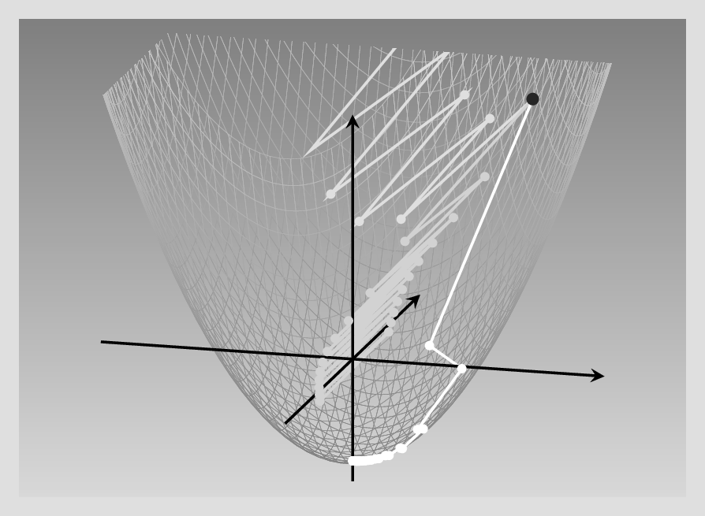
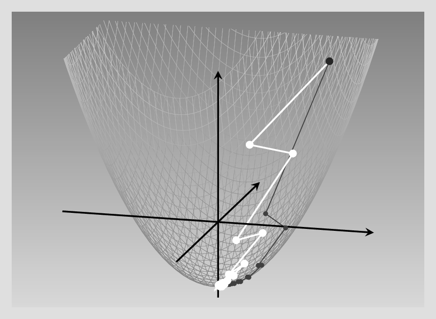
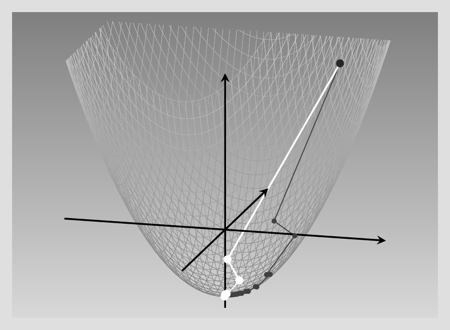
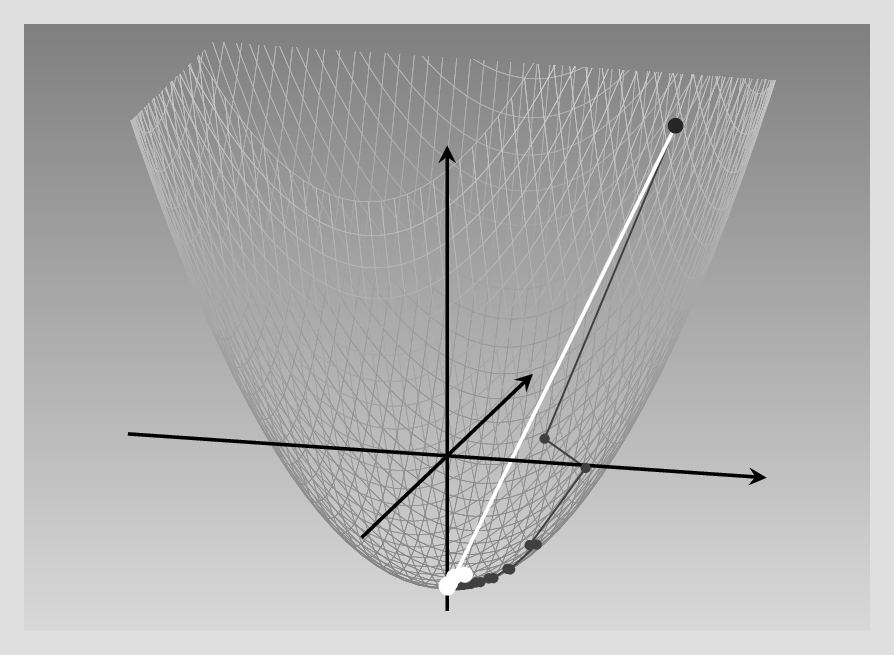
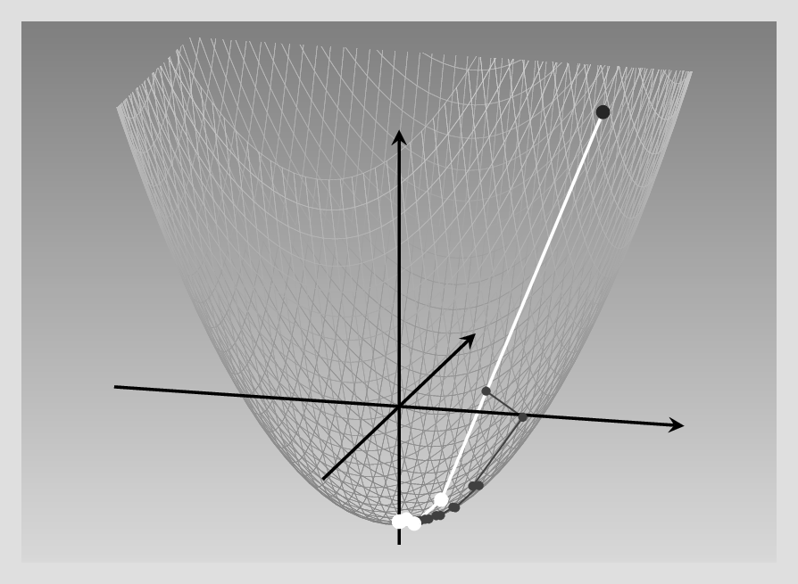

library(torch)
# compute gradient of loss w.r.t. all tensors with
# requires_grad = TRUE
loss$backward()
### -------- Update weights --------
# Wrap in with_no_grad() because this is a part we don't
# want to record for automatic gradient computation
with_no_grad({
w1 <- w1$sub_(learning_rate * w1$grad)
w2 <- w2$sub_(learning_rate * w2$grad)
b1 <- b1$sub_(learning_rate * b1$grad)
b2 <- b2$sub_(learning_rate * b2$grad)
# Zero gradients after every pass, as they'd accumulate
# otherwise
w1$grad$zero_()
w2$grad$zero_()
b1$grad$zero_()
b2$grad$zero_()
})8 Optimizers
By now, we’ve gone into quite some detail on tensors, automatic differentiation, and modules. In this chapter, we look into the final major concept present in core torch: optimizers. Where modules encapsulate layer and model logic, optimizers do the same for optimization strategies.
Let’s start by pondering why having optimizer objects is so useful.
8.1 Why optimizers?
To this question, there are two main types of answer. First, the technical one.
If you look back at how we coded our first neural network, you’ll see that we proceeded like this:
compute predictions (forward pass),
calculate the loss,
have autograd compute partial derivatives (calling
loss$backward()), andupdate the parameters, subtracting from each some fraction of the gradient.
Here is how that last part looked:
Now this was a small network – imagine having to code such logic for architectures with tens or hundreds of layers! Surely this can’t be what developers of a deep learning framework want their users to do. Accordingly, weight updates are taken care of by specialized objects – the optimizers in question.
Thus, the technical type of answer concerns usability and convenience. But more is involved. With the above approach, there’s hardly a way to find a good learning rate other than by trial and error. And most probably, there is not even an optimal learning rate that would be constant over the whole training process. Fortunately, a rich tradition of research has turned up at set of proven update strategies. These strategies commonly involve a state kept between operations. This is another reason why, just like modules, optimizers are objects in torch.
Before we look deeper at these strategies, let’s see how we’d replace the above manual weight-updating process with a version that uses an optimizer.
8.2 Using built-in torch optimizers
An optimizer needs to know what it’s supposed to optimize. In the context of a neural network model, this will be the network’s parameters. With no real difference between “model modules” and “layer modules”, however, we can demonstrate how it works using a single built-in module such as nn_linear().
Here we instantiate a gradient descent optimizer designed to work on some linear module’s parameters:
l <- nn_linear(10, 2)
opt <- optim_sgd(l$parameters, lr = 0.1)In addition to the always-required reference to what tensors should be optimized, optim_sgd() has just a single non-optional parameter: lr, the learning rate.
Once we have an optimizer object, parameter updates are triggered by calling its step() method. One thing remains unchanged, though. We still need to make sure gradients are not accumulated over training iterations. This means we still call zero_grad() – but this time, on the optimizer object.
This is the complete code replacing the above manual procedure:
# compute gradient of loss w.r.t. all tensors with
# requires_grad = TRUE
# no change here
loss$backward()
# Still need to zero out gradients before the backward pass,
# only this time, on the optimizer object
optimizer$zero_grad()
# use the optimizer to update model parameters
optimizer$step()I’m sure you’ll agree that usability-wise, this is an enormous improvement. Now, let’s get back to our original question – why optimizers? – and talk more about the second, strategic part of the answer.
8.3 Parameter update strategies
Searching for a good learning rate by trial and error is costly. And the learning rate isn’t even the only thing we’re uncertain about. All it does is specify how big of a step to take. However, that’s not the only unresolved question.
So far, we’ve always assumed that the direction of steepest descent, as given by the gradient, is the best way to go. This is not always the case, though. So we are left with uncertainties regarding both magnitude and direction of parameter updates.
Fortunately, over the last decade, there has been significant progress in research related to weight updating in neural networks. Here, we take a look at major considerations involved, and situate in context some of the most popular optimizers provided by torch.
The baseline to compare against is gradient descent, or steepest descent, the algorithm we’ve been using in our manual implementations of function minimization and neural-network training. Let’s quickly recall the guiding principle behind it.
8.3.1 Gradient descent (a.k.a. steepest descent, a.k.a. stochastic gradient descent (SGD))
The gradient – the vector of partial derivatives, one for each input feature – indicates the direction in which a function increases most. Going in the opposite direction means we descend the fastest way possible. Or does it?
Unfortunately, it is not that simple. It depends on the landscape that surrounds us, or put more technically, the contours of the function we want to minimize. To illustrate, compare two situations.
The first is the one we encountered when first learning about automatic differentiation. The example there was a quadratic function in two dimensions. We didn’t make a great deal out of it at the time, but an important point about this specific function was that the slope was the same in both dimensions. Under such conditions, steepest descent is optimal.
Let’s verify that. The function was : \(f(x_1, x_2) = 0.2 {x_1}^2 + 0.2 {x_2}^2 - 5\), and its gradient, \(\begin{bmatrix}0.4\\0.4 \end{bmatrix}\). Now say we’re at point \((x1, x2) = (6,6)\). For each coordinate, we subtract 0.4 times its current value. Or rather, that would be if we had to use a learning rate of 1. But we don’t have to. If we pick a learning rate of 2.5, we can arrive at the minimum in a single step: \((x_1, x_2) = (6 - 2.5*0.4*6, 6 - 2.5*0.4*6) = (0,0)\). See below for an illustration of what happens in each case (fig. 8.1).

In a nutshell, thus, with a isotropic function like this – the variance being the same in both directions – it is “just” a matter of getting the learning rate right.
Now compare this to what happens if slopes in both directions are decidedly distinct.
This time, the coefficient for \(x_2\) is ten times as big as that for \(x_1\): We have \(f(x_1, x_2) = 0.2 {x_1}^2 + 2 {x_2}^2 - 5\). This means that as we progress in the \(x_2\) direction, the function value increases sharply, while in the \(x_1\) direction, it rises much more slowly. Thus, during gradient descent, we make far greater progress in one direction than the other.
Again, we investigate what happens for different learning rates. Below, we contrast three different settings. With the lowest learning rate, the process eventually reaches the minimum, but a lot more slowly than in the symmetric case. With a learning rate just slightly higher, descent gets lost in endless zig-zagging, oscillating between positive and negative values of the more influential variable, \(x_2\). Finally, a learning rate that, again, is just minimally higher, has a catastrophic effect: The function value explodes, zig-zagging up right to infinity (fig. 8.2).

This should be pretty convincing – even with a pretty conventional function of just two variables, steepest descent is far from being a panacea! And in deep learning, loss functions will be a lot less well-behaved. This is where the need for more sophisticated algorithms arises: Enter – again – optimizers.
8.3.2 Things that matter
Viewed conceptually, major modifications to steepest descent can be categorized by the considerations that drive them, or equivalently, by the problems they’re trying to solve. Here, we focus on three such considerations.
First, instead of starting in a completely new direction every time we re-compute the gradient, we might want to keep a bit of the old direction – keep momentum, to use the technical term. This should help avoiding the inefficient zig-zagging seen in the example above.
Second, looking back at just that example of minimizing a non-symmetric function … Why, really, should we be constrained to using the same learning rate for all variables? When it’s evident that all variables don’t vary to the same degree, why don’t we update them in individually appropriate ways?
Third – and this is a fix for problems that only arise once you’ve taken actions to reduce the learning rate for overly-impactful features – you also want to make sure that learning still progresses, that parameters still get updated.
These considerations are nicely illustrated by a few classics among the optimization algorithms.
8.3.3 Staying on track: Gradient descent with momentum
In gradient descent with momentum, we don’t directly use the gradient to update the weights. Instead, you can picture weight updates as particles moving on a trajectory: They want to keep going in whatever direction they’re going – keep their momentum, in physics speak – but get continually deflected by collisions. These “collisions” are friendly nudges to, please, keep into account the gradient at the now current position. These dynamics result in a two-step update logic.
In the below formulas, the choice of symbols reflects the physical analogy. \(\mathbf{x}\) is the position, “where we’re at” in parameter space – or more simply, the current values of the parameters. Time evolution is captured by superscripts, with \(\mathbf{y}^{(k)}\) representing the state of variable \(\mathbf{y}\) at the current time, \(k\). The instantaneous velocity at time \(k\) is just what is measured by the gradient, \(\mathbf{g}^{(k)}\). But in updating position, we won’t directly make use of it. Instead, at each iteration, the update velocity is a combination of old velocity – weighted by momentum parameter \(m\) – and the freshly-computed gradient (weighted by the learning rate). Step one of the two-step logic captures this strategy:
\[ \mathbf{v}^{(k+1)} = m \ \mathbf{v}^{(k)} + lr \ \mathbf{g}^{(k)} \tag{8.1}\]
The second step then is the update of \(\mathbf{x}\) due to this “compromise” velocity \(\mathbf{v}\).
\[ \mathbf{x}^{(k+1)} = \mathbf{x}^{(k)} - \mathbf{v}^{(k+1)} \tag{8.2}\]
Besides the physics analogy, there is another one you may find useful, one that makes use of a concept prominent in time series analysis. If we choose \(m\) and \(lr\) such that they add up to 1, the result is an exponentially weighted moving average. (While this conceptualization, I think, helps understanding, in practice there is no necessity to have \(m\) and \(lr\) summing to 1, though).
Now, let’s return to the non-isotropic paraboloid, and compare SGD with and without momentum. For the latter (bright curve), I’m using a combination of \(lr = 0.5\) and \(mu = 0.1\). For SGD – dark curve – the learning rate is the “good one” from the figure above.Definitely, SGD with momentum requires far fewer steps to reach the minimum (fig. 8.3).

8.3.4 Adagrad
Can we do better yet? Now, we know that in our running example, it is really the fact that one feature changes much faster than the other that slows down optimization. Having separate learning rates per parameter thus clearly seems like a thing we want. In fact, most of the optimizers popular in deep learning have per-parameter learning rates. But how would you actually determine those?
This is where different algorithms differ. Adagrad, for example, divides each parameter update by the cumulative sum of its partial derivatives (squared, to be precise), where “cumulative” means we’re keeping track of them since the very first iteration. If we call that “accumulator variable” \(s\), refer to the parameter in question by \(i\), and count iterations using \(k\), this gives us the following formula for keeping \(s\) updated:
\[ s_i^{(k)} = \sum_{j=1}^k (g_i^{(j)})^2 \tag{8.3}\]
(By the way, feel free to skip over the formulas if you don’t like them. I’m doing my best to communicate what they do in words, so you shouldn’t miss out on essential information.)
Now, the update rule for each parameter subtracts a portion of the gradient, as did vanilla steepest descent – but this time, that portion is determined not just by the (global) learning rate, but also, by the aforementioned cumulative sum of squared partials. The bigger that sum – that is, the bigger the gradients have been during training – the smaller the adjustment:1
\[ x_i^{(k+1)} = x_i^{(k)} - \frac{lr}{\epsilon + \sqrt{s_i^{(k)}}}\ g_i^{(k)}\\ \tag{8.4}\]
The net effect of this strategy is that, if a parameter has consistently high gradients, its influence is played down. Parameters with, habitually, tiny gradients, on the other hand, can be sure to receive a lot of attention once that changes.
With this algorithm, the global learning rate, \(lr\), is of lesser importance. In our running example, it turns out that for best results, we can (and should) use a very high learning rate: 3.7! Here (fig. 8.4) is the result, again comparing with vanilla gradient descent (gray curve):

In our example, thus, Adagrad performs excellently. But in training a neural network, we tend to run a lot of iterations. Then, with the way gradients are accumulated, the effective learning rate decreases more and more, and a dead end is reached.
Are there other ways to have individual, per-parameter learning rates?
8.3.5 RMSProp
RMSProp replaces the cumulative-gradient strategy found in Adagrad with a weighted-average one. At each point, the “bookkeeping”, per-parameter variable \(s_i\) is a weighted average of its previous value and the previous (squared) gradient:
\[ s_i^{(k+1)} = \gamma \ s_i^{(k)} + (1-\gamma) \ (g_i^{(k)})^2 \tag{8.5}\]
The update then looks as with Adagrad:
\[ x_i^{(k+1)} = x_i^{(k)} - \frac{lr}{\epsilon + \sqrt{s_i^{(k)}}}\ g_i^{(k)}\\ \tag{8.6}\]
In this way, each parameter update gets weighted appropriately, without learning slowing down overall.
Here is the result, again compared against the SGD baseline (fig. 8.5):

As of today, RMSProp is one of the most-often used optimizers in deep learning, with probably just Adam - to be introduced next – being more popular.
8.3.6 Adam
Adam combines two concepts we’ve already seen: momentum – to keep “on track” – and parameter-dependent updates, to avoid excessive dependence on fast-changing parameters. The logic is like this.2
For one, just like in SGD with momentum, we keep an exponentially weighted average of gradients. Here the weighting coefficient, \(\gamma_v\), is usually set to 0.9.
\[ v_i^{(k+1)} = \gamma_v \ v_i^{(k)} + (1-\gamma_v) \ g_i^{(k)} \tag{8.7}\]
Also, like in RMSProp, there is an exponentially weighted average of squared gradients, with weighting coefficient \(\gamma_s\) usually set to 0.999.
\[ s_i^{(k+1)} = \gamma_s \ s_i^{(k)} + (1-\gamma_s) \ (g_i^{(k)})^2 \tag{8.8}\]
The parameter updates now make use of that information in the following way. The velocity determines the direction of the update, while both velocity and magnitude of gradients (together with the learning rate, \(lr\)) determine its size:
\[ x_i^{(k+1)} = x_i^{(k)} - \frac{lr \ v_i^{(k+1)}}{\epsilon + \sqrt{s_i^{(k+1)}}}\ \\ \tag{8.9}\]
Let’s conclude this chapter by testing Adam on our running example (fig. 8.6).

Next, we head on to loss functions, the last building block to look at before we re-factor the regression network and function minimization examples to benefit from torch modules and optimizers.